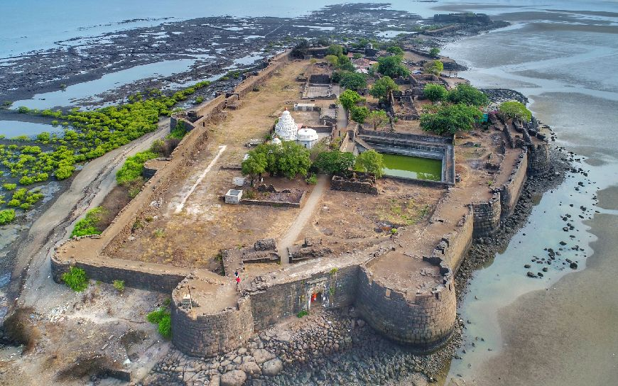

Raigad Fort was the capital of the Maratha Empire and is one of the most important forts in Maharashtra. It was the location of Shivaji Maharaj’s coronation in 1674.
Sindhudurg Fort
Sindhudurg Fort is situated on an island off the coast of Maharashtra. It was built to protect the coastline from foreign invaders like the Portuguese.
Rajgad Fort
Rajgad Fort was Shivaji Maharaj’s first capital and served as a strategic military base during the early years of the Maratha Empire.
Shivneri Fort
Shivneri Fort is the birthplace of Shivaji Maharaj. It holds immense historical and cultural significance in Maratha history.
Tung Fort
Tung Fort is located in the Western Ghats and is known for its strategic position that overlooks the region. The fort was used for military purposes during the Maratha rule.
Naldurg Fort
Naldurg Fort is a historic fort in Naldurg town of Dharashiv district in Maharashtra state of India. Naldurg Fort is named after Nalraja who built the fort in medieval architectural style.
Rajmachi Fort
Rajmachi Fort, also known as the "Fort of Khandala," was a major military base for the Marathas. Its location on a hill provides a great view of the surrounding valleys and hills.

Kolaba Fort
Kolaba Fort is located in the Arabian Sea near Alibaug and played a significant role in the defense of the coastal regions of Maharashtra. It is known for its strong fortifications.
Ajinkya-Tara Fort
Ajinkya-Tara Fort is a lesser-known fort located in the region of satara. It offers a serene and peaceful environment, along with an impressive view of the surrounding landscapes.
Murud-Janjira Fort
Murud-Janjira was known for its strong defensive walls that helped defend the region from invaders. It is located on a small island in the Arabian Sea.